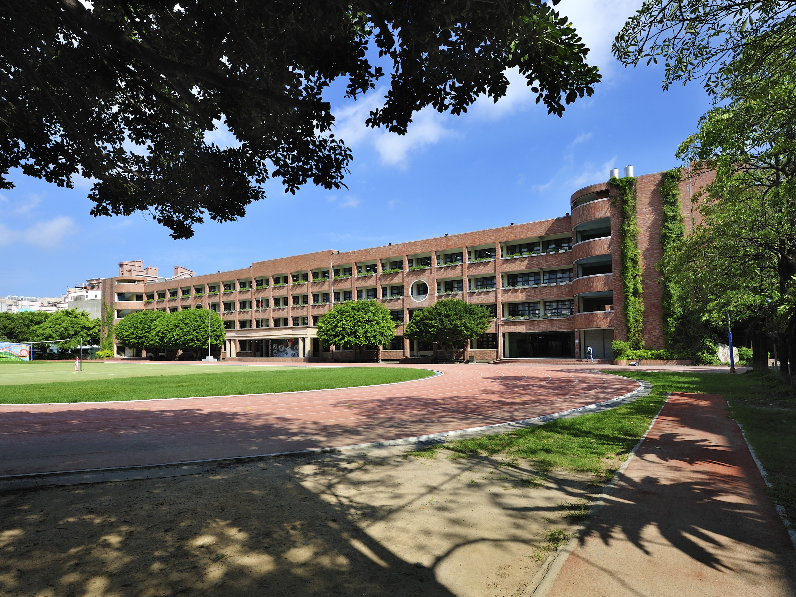
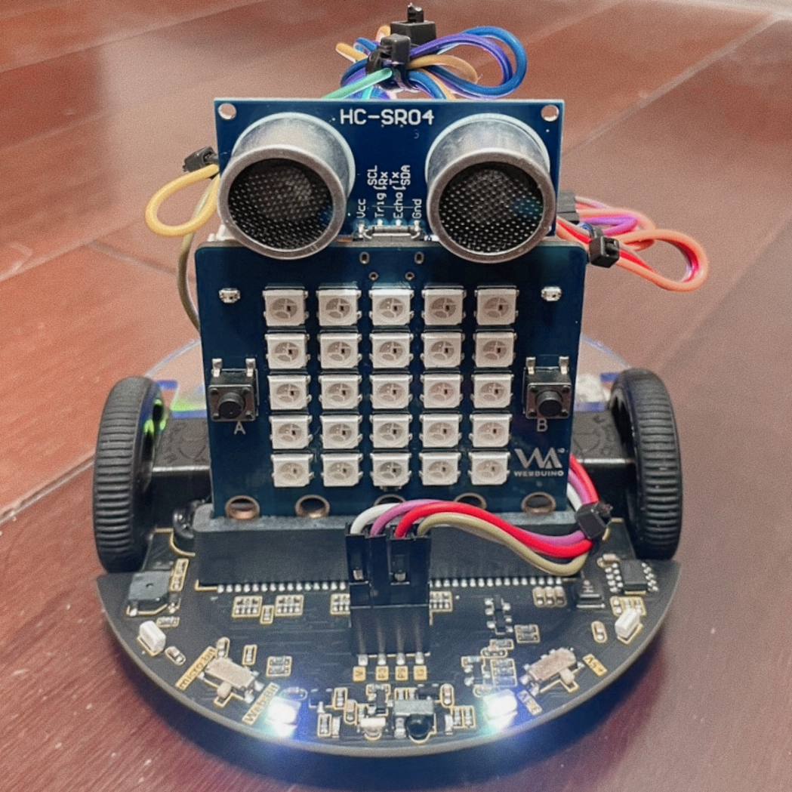
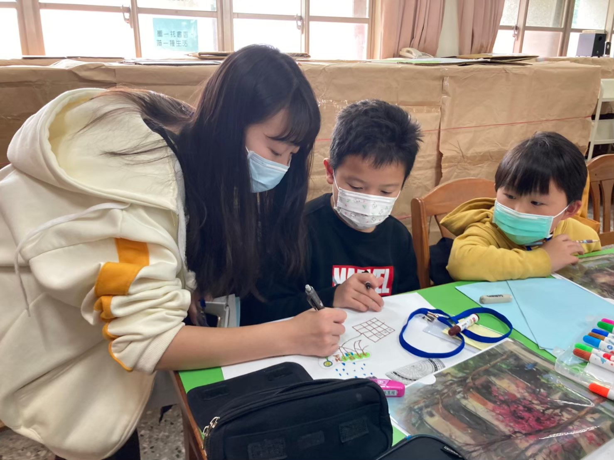
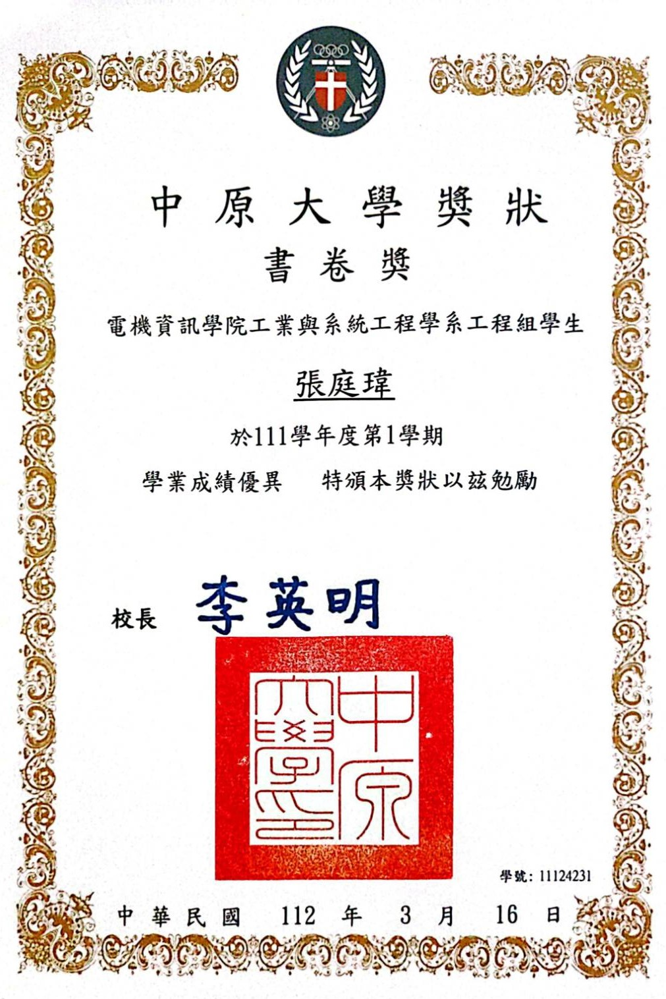
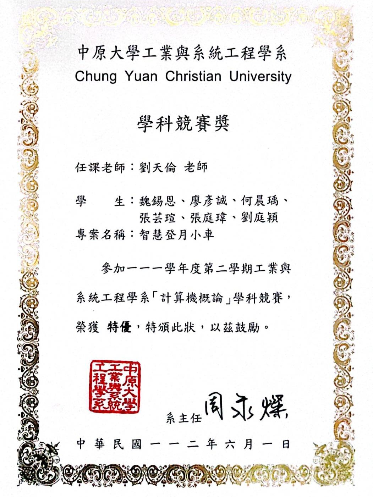

張庭瑋
S K I L L
E X P E R I E N C E
E d u c a t i o n a l L e v e l
|
中原大學 — 工業與系統工程學系工程組 ▶ 2022.09 ～ 現今
|
|
|
國立竹北高級中學 — 普通科 ▶ 2019.09 ～ 2022.06
|
|
|  |
三民國中 ▶ 2016.09 ～ 2019.06
|
|
國立新竹教育大學附設實驗國民小學 (現：國立清華大學附設實驗國民小學) ▶ 2010.09 ～ 2016.06
|
A c t i v i e s
|  | 計概專題報告 —《智慧登月小車》 ▶ 2023.06.01 |
| 此專題利用Webduino平台打造一輛智慧化的小車。 透過結合網頁控制和感測器技術，該專題展示如何實現遠程操控、自主導航以及數據收集等功能， 並讓我們更了解現代科技如何應用於探索與學習的領域 | |
| 中原大學熱舞社成果發表會 —《黑暗巴洛克》 ▶ 2022.12.29
上大學後的第一次舞台是因為熱舞社，
這次經歷不僅是舞蹈技巧的提升，更是對團隊合作和舞台表現的了解。
在練習和演出的過程中，我學會了如何與夥伴協調，展現出我們共同的能量和熱情，是一次難忘的體驗。
|
 |
| 中原大學熱舞社成果發表會 —《舞夜十刻》 ▶ 2023.06.01
上大學後的第二次表演仍然獻給了熱舞社，這次與上次不同的是，我們更加融洽地將舞台表演與學業平衡。
雖然繁忙，但我們通過更有效的組織和分工，成功地克服了挑戰，展現出更加成熟和專業的表演水準。
|
 |
| 竹北高中熱舞社成果發表會 —《旧日》 ▶ 2020.08.24
高中時因為對舞蹈很感興趣，因此踏上了跳舞的道路。
雖然每次辛苦的練習讓我汗流浹背，但當能編排一支舞時，成就感油然而生。
這種付出與收穫的感覺，讓我更加有動利繼續向前。
|
|
| 科學素養營隊 ▶ 2021.01.21
高二時很幸遇有機會載班導師的帶領下和班上同學們一起準備一個兩天的國小科學營隊，擔任隊輔是一段充滿成就感的經歷。
透過協助小朋友們探索科學的樂趣，我不僅學到了如何引導他人以及怎麼和小朋友們溝通，更學到了團隊合作的重要性。
|
 |
| 竹北高中第28屆畢業歌 —《旅程》 ▶ 2022.06.01
第一次進錄音室是很難忘的經驗！能擔任畢業歌的主唱和朋友們一起製作讓我感到非常的榮幸和有趣，和團隊一起錄製、錄音過程都充滿了挑戰和新鮮感。
這次的經驗中讓我了解到了許多不同的錄音知識，也在過程中有美好的回憶
|
|  |  |